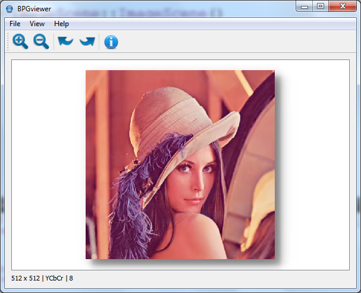

BPG Viewer

Download
Installer for Windows: Click here to download
About BPG Image
BPG (Better Portable Graphics) is a new image format. Its purpose is to replace the JPEG image format when quality or file size is an issue.
Using BPGviwer you can view any BPG file.BPG is a lossy and lossless picture compression format based on High Efficiency Video Coding(HEVC))
BPGviewer Features
- Zoom
- Rotate
- FileInfo
- File association
- drag and drop support
Specification
BPG file specification.
Rupesh Sreeraman - https://github.com/rupeshs